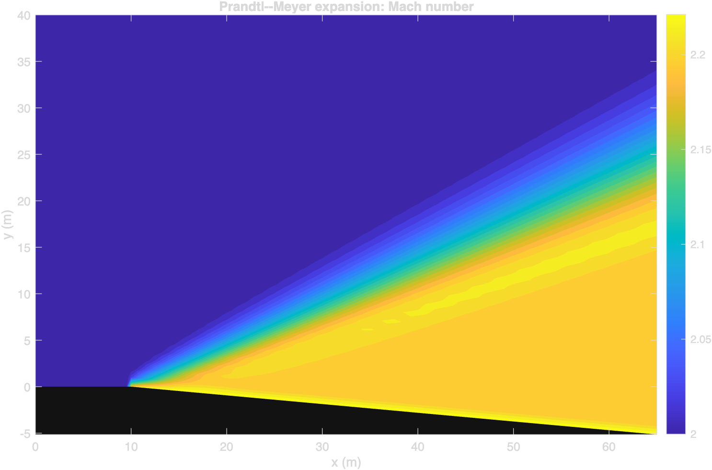
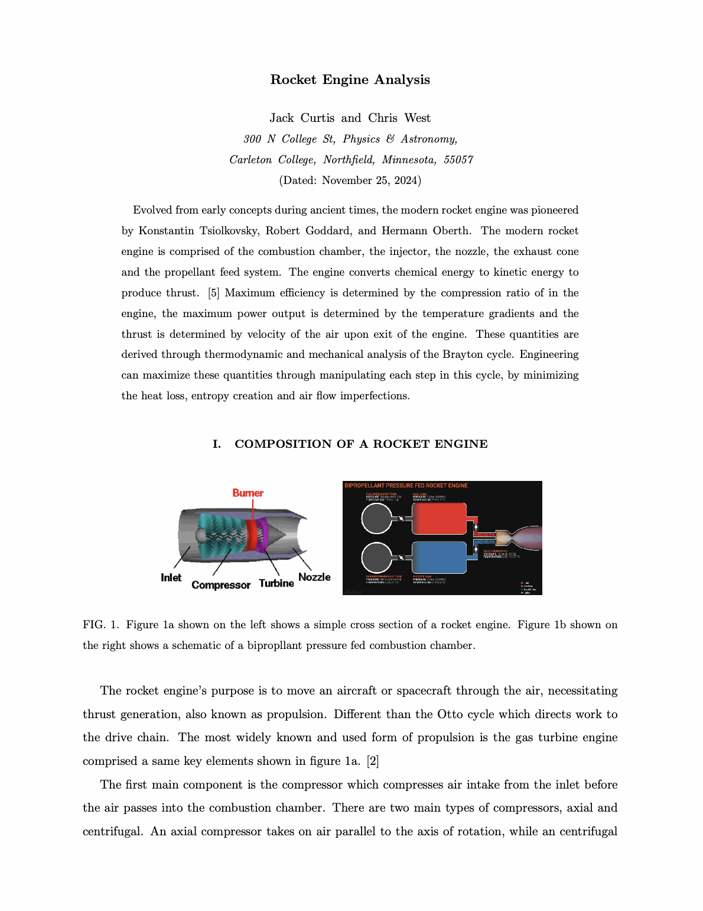
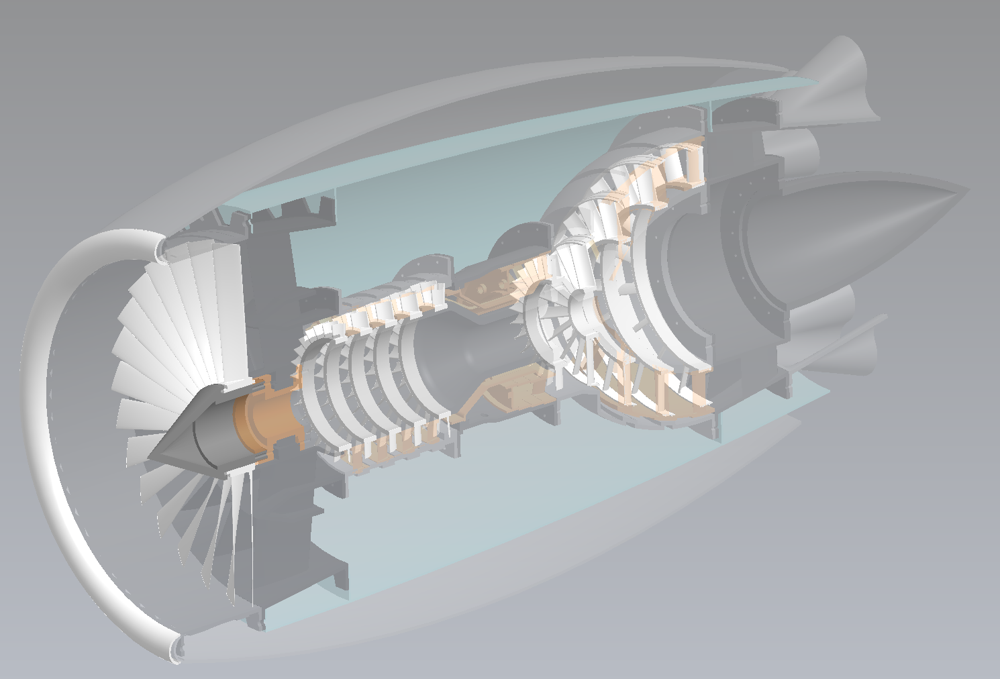
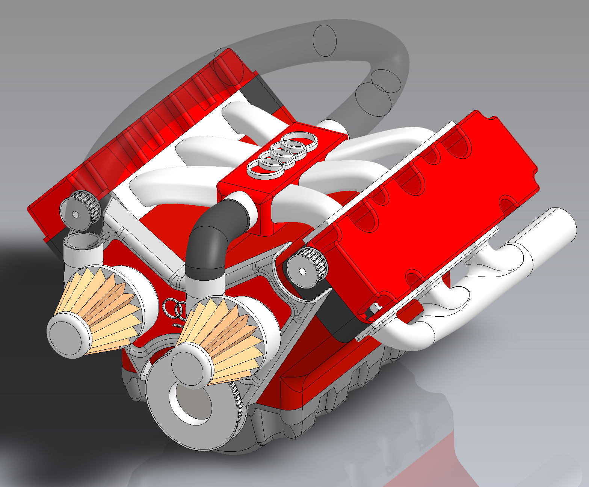

MATLAB CFD Solver Suite
A modular CFD environment progressing from numerical methods to two-dimensional compressible Navier–Stokes simulation.
View projectPhysics graduate · Engineering portfolio
Physics | Aerospace Engineering | Fluid Dynamics | Propulsion
Physics graduate focused on hypersonic flight, propulsion systems, compressible aerodynamics, and next-generation aircraft. Received departmental honors in physics for work on supersonics, developed a MATLAB CFD solver while studying numerical methods and compressible flow from first principles. Experience conducting honors-level physics research, scientific computing, CAD/mechanical design, and the discipline and leadership developed as an NCAA quarterback. Future planned projects include airfoil simulations and building a model liquid propellant rocket engine at home.
Selected work
Independent research, analytical studies, and hands-on builds spanning fluid dynamics, propulsion, and mechanical design.

A modular CFD environment progressing from numerical methods to two-dimensional compressible Navier–Stokes simulation.
View project
Senior physics capstone connecting conservation laws and compressible-flow theory to shock waves, ramjet propulsion, aerodynamic measurement, and the limits of idealized models in hypersonic flight.
View project
A paper coauthored with Chris West connecting ideal Brayton-cycle relationships, rocket thrust, and engineering losses to propulsion performance, with the full paper and derivations available.
View project
A SolidWorks assembly study of the fan, compressor stages, combustion region, turbines, and exhaust, with cutaway views, a component gallery, and a downloadable CAD file.
View project
A SolidWorks assembly study exploring pistons, connecting rods, the crankshaft, and valve-train components through model views, internal sections, and a downloadable CAD file.
View projectAbout
I’m a physics graduate from Carleton College building toward a career in aerospace engineering.
My physics background taught me to reduce complex systems to their governing principles. I now apply that approach to compressible aerodynamics, CFD, propulsion, and mechanical design—connecting analytical theory with simulation and physical assemblies.
My departmental honors work focused on supersonic airflow, while independent study and project work continue to deepen my experience in numerical methods, gas dynamics, rocket propulsion, CAD, and scientific computing.
Capabilities
A growing toolkit for analyzing, designing, and communicating engineering systems.
Contact
I’m interested in aerospace and mechanical engineering opportunities involving CFD, propulsion, high-speed aerodynamics, and design.